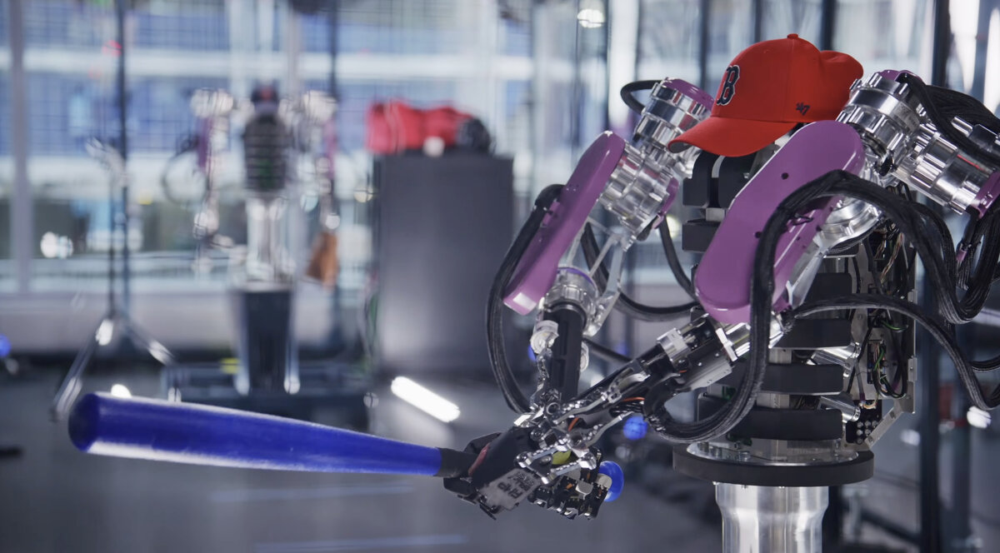

Робототехники годами бьются об одну проблему: современные манипуляторы слишком «жёсткие». Передаточные отношения в промышленных и исследовательских рука́х обычно выше 80:1 — это даёт силу и точность, но многократно увеличивает эффективную инерцию, и о мягком, человеческом контакте с объектом речи не идёт. Институт RAI пошёл против течения: его двухрукий манипулятор AthenaZero спроектирован вокруг низкой отражённой инерции и в человеческом темпе выполняет то, что раньше казалось прерогативой биологии, — бросает, ловит и отбивает бейсбольный мяч битой. Работа опубликована в журнале Science Robotics, а свежую волну пересказов подхватили европейские тех-СМИ, включая Heise.
Бейсбол выбран не ради шоу: игра требует одновременно точности и динамики. В руках AthenaZero эффективная масса сопоставима с человеческой — на порядок ниже, чем у ведущих коллаборативных роботов. В большинстве суставов стоит редуктор всего 5:1 с КПД планетарных передач 97% и выше, поэтому робот чувствует усилие по току двигателей: ни одного силомоментного датчика на корпусе нет, а вместе с ними исчезли хрупкость и дрейф показаний. Руки обратимы (backdrivable) — робот может податливо уступить внешнему усилию, как человек.
Авторы подчёркивают: цель — не выпустить робота на поле. Бейсбол — полигон для «динамической манипуляции» в человеческом темпе: сбор урожая, сортировка, работа с хрупкими и летящими предметами, любое производство, где робот должен ловить, а не въедаться в объект. Низкая инерция плюс оценка усилия по току — это ещё и удешевление конструкции: дорогих сенсоров силы на борту просто нет.
Отдельного прорыва в «мозгах» здесь нет — управляющие алгоритмы хорошо знакомы; прорыв в механике и в том, что её довели до стабильных измеряемых результатов, оформленных в рецензируемой статье.